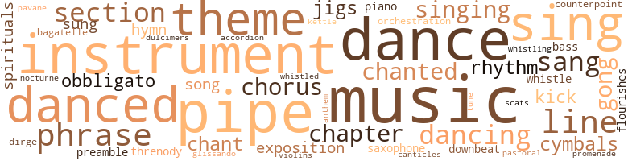
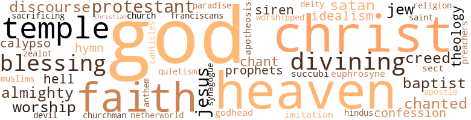

I Want a Black Doll, by Hercules, Frank (1967)
150 music-related terms matched in this text.
Most frequent terms in this topic: music (13); pipe (10); dance (9); danced (7); instruments (6)
accordion.n.01
Definition: a portable box-shaped free-reed instrument; the reeds are made to vibrate by air from the bellows controlled by the player
| word | sentence |
|---|---|
| accordion | This conclusion appeared pleasing to him , for he folded in like an accordion and pealed out laughter . |
bagatelle.n.01
Definition: a light piece of music for piano
| word | sentence |
|---|---|
| bagatelle | She might have been thought to propose something more than the bagatelle she held out to him . |
bass.n.07
Definition: the member with the lowest range of a family of musical instruments
| word | sentence |
|---|---|
| bass | Another sat before a set of drums and commenced to produce a muffled series of tentative , exploratory noises , banging the bass drum and brushing the cymbals . |
canticle.n.01
Definition: a hymn derived from the Bible
| word | sentence |
|---|---|
| canticles | It was an excruciated hush amid the soughing passions of the Grande Messe des Morts , whose mystic affirmations and denials were borne in from the living-room in canticles of ineffable agony . |
chant.n.01
Definition: a repetitive song in which as many syllables as necessary are assigned to a single tone
| word | sentence |
|---|---|
| chant | The historic chant of the tobacco-spitting auctioneer assailed his cars . |
| chant | It was , clearly , a war chant . |
chapter.n.01
Definition: a subdivision of a written work; usually numbered and titled
| word | sentence |
|---|---|
| chapter | Dégouste-Ibüsse , the peerless master of the hors-d'oeuvre , had given it an entire chapter in his celebrated work , Esotériques de L'Art Culinaire . |
| Chapter | He had just completed Chapter 14 , entitled : ' Aphrodisia in the Banana Patch . ' |
| chapter | The fifteenth chapter - he had begun it a few days ago - was entitled : ' How to Deflower a Long-Tailed Monkey ' . |
chorus.n.01
Definition: any utterance produced simultaneously by a group
| word | sentence |
|---|---|
| chorus | Sexual non-consummation ordained by a bawling Jumping-Jack , the leader of a chorus that brought the players belly to belly and teased them to the verge of orgasm . |
| chorus | they exclaimed in chorus . |
counterpoint.n.01
Definition: a musical form involving the simultaneous sound of two or more melodies
| word | sentence |
|---|---|
| counterpoint | An insupportable climax of counterpoint for two anguished voices . |
cymbal.n.01
Definition: a percussion instrument consisting of a concave brass disk; makes a loud crashing sound when hit with a drumstick or when two are struck together
| word | sentence |
|---|---|
| cymbals | Another sat before a set of drums and commenced to produce a muffled series of tentative , exploratory noises , banging the bass drum and brushing the cymbals . |
| cymbals | But at length an orchestral flourish of drums and cymbals commanded silence of the guests . |
dance.n.01
Definition: an artistic form of nonverbal communication
| word | sentence |
|---|---|
| dance | ' Treasurer to pay deposit for dance out of general fund , ' she dictated . |
| dance | He already knew what the dance would be like . |
| dances | She was as pretty - neither more nor less - as Negro hat-check girls working at dances uptown in Harlem . |
| dance | The boxes set along both sides of the dance area were crowded with guests whose occupancy of those seats advertised their personal distinction . |
| dance | This led , no doubt illogically , to mention of the financial results of the dance . |
| dance | ' But the arrangements for the dance were drawn up at the very first meeting I attended -- ' Mrs Galloway coped with this by saying : ' Maybe so , honey , but the programme was all set long before that . ' |
dance.n.02
Definition: a party of people assembled for dancing
| word | sentence |
|---|---|
| dance | The dance band played from a platform at one end of the room , and since the theme of the ball was ' A Night in Africa ' the musicians were dressed in African robes . |
dance.v.02
Definition: move in a pattern; usually to musical accompaniment; do or perform a dance
| word | sentence |
|---|---|
| dancing | And without waiting for him to reply she said : ' We go dancing tomorrow evening . |
dance.v.03
Definition: skip, leap, or move up and down or sideways
| word | sentence |
|---|---|
| danced | He danced with each in turn . |
| dance | And he was never without a partner for no one else asked them to dance . |
| dancing | Mae was one of the four or five coloured nurses on the staff ; one of the pair with whom he had taken turns dancing at a recent party in the physicians ' lounge prior , of course , to that disastrous evening . |
| dance | As a rule , Negroes would sooner pray than revolt ; would sooner sing spirituals than subvert tyranny ; would sooner dance to please than demand to disturb ; would sooner be Americans than free men . |
| danced | When he danced with Barbara he admitted to himself that she danced well . |
| danced | When he danced with Barbara he admitted to himself that she danced well . |
| danced | When you held a Negro girl in your arms and danced with her , Almighty God Himself would try to cut in on you . |
| dancing | Lincoln stopped dancing and released Barbara while he returned Jimmy Plumpton 's greeting . |
| dance | They ordered drinks which were infuriatingly delayed in arriving , and presently when the Latin-American orchestra began to play they got up to dance . |
| danced | As they danced a waiter came up and touched John on the elbow . |
| dancing | They stopped dancing . |
| danced | And the firelight danced on the darkened walls and the pinewood hissed in the grate . |
| danced | Figures that danced to music - chaste , severe , disciplined and enraptured as the music of Sebastian Bach . |
dirge.n.01
Definition: a song or hymn of mourning composed or performed as a memorial to a dead person
| word | sentence |
|---|---|
| threnody | And are orchestrated into a harrowing threnody . |
| dirge | ' John , ' she called to him , her voice low as a dirge , ' you asked me last time . |
downbeat.n.01
Definition: the first beat of a musical measure (as the conductor's arm moves downward)
| word | sentence |
|---|---|
| downbeat | And then , without visible downbeat or other signal , they began their performance . |
dulcimer.n.02
Definition: a trapezoidal zither whose metal strings are struck with light hammers
| word | sentence |
|---|---|
| dulcimers | There was no sound of harps and dulcimers ; neither was there the scent of sulphur nor the odour of brimstone ; and of pain , the sharp , masterful agony of a knife-wrought sacrifice , there was little save a minor irritation , a feeble poignancy from which in the forty-first second past three minutes there arose a brief , begrudging spasm , a fleeting cortical pleasure , pallid and penurious as the minim of semen he yielded in two miserly gouts in the luxuriant underbrush beyond her moat . |
exposition.n.04
Definition: (music) the section of a movement (especially in sonata form) where the major musical themes first occur
| word | sentence |
|---|---|
| exposition | ' In training --- ' Impelled by the affinity of ideas , he set off on a solemn , elaborate exposition of tactics for the forthcoming game . |
| exposition | But Lincoln was enrapt in exposition of his personal philosophy , a rather frequent exercise from which he drew immense satisfaction . |
flourish.n.05
Definition: (music) a short lively tune played on brass instruments
| word | sentence |
|---|---|
| flourishes | There were no flourishes of the sort that his southern code of chivalry dictated in his dealings with Miss Margaret Jean . |
glissando.n.01
Definition: a rapid series of ascending or descending notes on the musical scale
| word | sentence |
|---|---|
| glissando | His voice slid down the scale , glissando , to a whisper . |
gong.n.01
Definition: a percussion instrument consisting of a metal plate that is struck with a softheaded drumstick
| word | sentence |
|---|---|
| gong | One gong for admission to an exclusive Washington club ; saliva . |
| gongs | Two gongs for appointments to high official posts ; more saliva . |
| gongs | Three gongs for a hint of concession that Negroes are Americans and only incidentally Negroes - and the blacks are spitting in spate . |
hymn.n.01
Definition: a song of praise (to God or to a saint or to a nation)
| word | sentence |
|---|---|
| Hymn | The band struck up the ' Battle Hymn of the Republic ' and the Demoiselles began each in turn to promenade . |
| anthem | So in the end they chose an anthem of the National Association for the Advancement of Coloured People . |
| hymn | ' Let us sing hymn no. 246 , ' suggested the minister , and the graveside obsequies began . |
jig.n.01
Definition: music in three-four time for dancing a jig
| word | sentence |
|---|---|
| jigs | ' Could it be one of your jigs from the International Club ? ' |
| jigs | This suggestion gave the Africans enormous pleasure which they expressed by staccato peals of strident laughter and short shuffling jigs . |
kettle.n.04
Definition: a large hemispherical brass or copper percussion instrument with a drumhead that can be tuned by adjusting the tension on it
| word | sentence |
|---|---|
| kettle | ' Why , fer cryin ' out loud ------ ' Her nostrils flared and she breathed with the noise of a kettle hissing . |
kick.v.04
Definition: kick a leg up
| word | sentence |
|---|---|
| Kick | Kick you in the teeth or stab you in the back . |
| kick | It 's like the more they kick us , the more we want to kiss them . |
music.n.01
Definition: an artistic form of auditory communication incorporating instrumental or vocal tones in a structured and continuous manner
| word | sentence |
|---|---|
| music | Not because of the failure of any purpose involved in her having slept with him ; but rather because now that he was here , full of her and of her apple-pie , ' laying ' down naked as he was born , and smoking one of her cigarettes under the spell of this ' mood music ' , she just was n't for it . |
| music | There was nothing in the whole universe of music to compare with the slow movement of the Seventh . |
| music | He had so little time for listening to music nowadays , he was in danger of forgetting what he liked to hear . . . God ! |
| music | The funeral music of the earth that was a sepulchre for famous men . |
| music | Above the tumult of the music and the howling of the bandleader shouts of ' Go ! |
| music | The music ended with Lincoln jack-knifing over his partner 's writhing body , his hips , under the iron sway of his backside , swinging from side to side across her projecting pelvis . |
| music | It was like dancing with the sea to the music of the wind and stars . |
| music | ' That 's why them white folks call we music " swing " . ' |
| music | Cerberus , the three-headed , barking from the bowels of the orchestra : the reunion of the lovers , with the music become a soaring spell of liquid enchantment ; and then - she frowned - the ultimate poignancy , the dimensionless cry of lovers betrayed by unkept faith : ' I have lost my Eurydice ! ' |
| music | The sound of music floated in from the living-room . |
| music | ' Sometimes , ' he continued , ' on occasions like this - music helps . ' |
| music | Figures that danced to music - chaste , severe , disciplined and enraptured as the music of Sebastian Bach . |
| music | Figures that danced to music - chaste , severe , disciplined and enraptured as the music of Sebastian Bach . |
musical_instrument.n.01
Definition: any of various devices or contrivances that can be used to produce musical tones or sounds
| word | sentence |
|---|---|
| instrument | But when this had been composed and it was settled that she would attend the party as his guest , he still made a one-finger exercise of the theme , plucking away at it in the fashion of a beginner student of a stringed instrument fascinated by taut dissonances of overstrung pitch . |
| instruments | Where hot irons once had been employed to brand Negroes with the stigmata of their servile status , they were now used as instruments of integration . |
| instrument | And the trees themselves were the Maestro 's hands reflected in the shining surface of the instrument that was the earth , the sky , the luminous air . |
| instruments | ' Prepare the sacrificial instruments . ' |
| instruments | She glanced about his consulting-room , noting the usual appurtenances of the craft , the surgical bed , the glass-encased instruments , the enamelled basins . |
| instruments | It was a rite , a sacrifice ; and that operating-table was the altar , and those gleaming knives in their shining glass scabbard the sacrificial instruments . |
| instrument | He chose a bright instrument . |
| instruments | Then a great calm came over him , steeling his nerves , tempering his hands and forging them into sure and pliant instruments of his regenerate will . |
| instruments | His bags and instruments were in the next room - in his study . |
nocturne.n.01
Definition: a pensive lyrical piece of music (especially for the piano)
| word | sentence |
|---|---|
| nocturne | ' The Backhaus Chopin , ' he said , his dark recessive eyes glowing to a nocturne . |
obbligato.n.02
Definition: a part of the score that must be performed without change or omission
| word | sentence |
|---|---|
| obbligato | ' Nothing else in common , ' she continued against an obbligato in John 's mind : an accompaniment composed of variations on the childhood theme , ' Mummy , what is a " Nigger " ? ' |
| obbligato | ' Maugham found the other man completely illiterate about most of what gives value ----- ' The obbligato ceased . |
orchestration.n.01
Definition: an arrangement of a piece of music for performance by an orchestra or band
| word | sentence |
|---|---|
| orchestration | The moment when the sound of glass shattering , shivering , fragmenting , falling , was the orgasmic centre of the universe , the unique ecstatic orchestration of dream , wish and daring , nerve , gland and nightmare . |
pastorale.n.01
Definition: a musical composition that evokes rural life
| word | sentence |
|---|---|
| pastoral | and its relation to what he termed the non-urban or ' pastoral ' type of personality . |
pavane.n.01
Definition: music composed for dancing the pavane
| word | sentence |
|---|---|
| pavane | You saluted him with your grave , blue-irised gaze and he returned your greeting with his grave , blue-irised gaze and a proud , pendulum swing of his narrow , elongated head , first to the right , then to the left , followed by a modest dipping motion as if bowing acknowledgment to an acquaintance of long , though marginal standing , and succeeded thereafter by a courteous withdrawl , the greenish-dun mass ascending in a mottled pageantry of involuting majesty , so that it should in no way either impede or imperil your own downward pavane when at length you should decide upon it . |
phrase.n.02
Definition: a short musical passage
| word | sentence |
|---|---|
| phrase | In a particularly felicitous phrase that Dr Stevenson extemporised for the occasion , Lincoln was described as ' the Jackie Robinson of organized medicine ' . |
| phrase | Until then they were neither one thing nor the other : simply - he sought a roughly descriptive phrase - floating nondescripts . |
| phrase | And ' luxe ' , he told himself , abstracting from Baudelaire 's phrase , ' et volupté ' . |
| phrase | White people - ' the generic phrase sounded like a curse - ' white people imagine there 's just one standard of good looks for Negroes . |
| phrase | She knew that the Galloways were not ' Negro society ' , whatever the phrase meant . |
| phrase | Not a bad phrase . |
piano.n.01
Definition: a keyboard instrument that is played by depressing keys that cause hammers to strike tuned strings and produce sounds
| word | sentence |
|---|---|
| piano | One of the men arranged himself at a piano , fussing , rubbing his hands together , fidgeting with his chair . |
pipe.n.04
Definition: a tubular wind instrument
| word | sentence |
|---|---|
| pipe | He relit his pipe and leaned against the back-rest of the sofa , his body fretful and restive until he had organized himself into a position of maximum comfort . |
| pipe | He sucked at his pipe , relaxed and waiting . |
| pipe | So there was nothing to do but wash his hands in the squalid bathroom at a pipe slubbering and sputtering slimy rust water . |
| pipe | He tamped a plug of tobacco into his pipe , and superintended closely the two fingers employed in the operation . |
| pipe | The black smoke capping the bowl of his pipe asserted and solemnized the verdict . |
| pipe | And he appeared to have more to say , but after coaxing the embers of his pipe into an ash-tray he postponed immediate comment . |
| pipe | Galloway withdrew the cigar ( with which he had earlier replaced the pipe ) from his mouth and concentrated on it as though it were the inspiration of the covert malice he directed at Barbara . |
| pipe | He was tired ; he had just settled down for the evening with his pipe and a decanter of whisky . |
| pipe | He stood aside , coddling his pipe and holding the door open . |
| pipe | He gestured with his pipe . |
preamble.n.01
Definition: a preliminary introduction to a statute or constitution (usually explaining its purpose)
| word | sentence |
|---|---|
| preamble | He told him point blank without preamble that the latter had been guilty of an irretrievable indiscretion . |
promenade.n.01
Definition: a formal ball held for a school class toward the end of the academic year
| word | sentence |
|---|---|
| promenade | The strain of the grand promenade had screwed up Loveybelle 's nerves somewhat , so she snapped : ' What 's the matter , girl ? |
refrain.n.01
Definition: the part of a song where a soloist is joined by a group of singers
| word | sentence |
|---|---|
| chorus | they bellowed in chorus , with the genial awkwardness of males in the presence of gestation . |
rhythm.n.04
Definition: the arrangement of spoken words alternating stressed and unstressed elements
| word | sentence |
|---|---|
| rhythm | The woman sang in a low , purling voice , not ' selling ' the songs in any sense , just phrasing them so that the trivial words interwove with the rhythm , embellishing and revitalizing it , and receiving in return novel gifts of nuance , unexpected endowments of significance . |
| rhythm | There was no distinct metronomic change in its rhythm ; there was a barely measurable disturbance ; and a cardiograph would have confirmed that it was nothing to worry about . |
sax.n.02
Definition: a single-reed woodwind with a conical bore
| word | sentence |
|---|---|
| saxophone | The third man experimented with a dulcet flow of harmonic accrescendi on a tenor saxophone . |
scat.n.01
Definition: singing jazz; the singer substitutes nonsense syllables for the words of the song and tries to sound like a musical instrument
| word | sentence |
|---|---|
| scats | She was uncertain whether to wait here or outside in the corridor , since all the scats were taken , and she was standing about hesitantly when the door of the doctor 's consulting-room opened and a short light-skinned Negro woman with a hooked Mediterranean nose appeared . |
section.n.01
Definition: a self-contained part of a larger composition (written or musical)
| word | sentence |
|---|---|
| section | But it was in the better section of the coloured residential quarter and she thought herself lucky to have it . |
| section | Her revulsion materialized the insect which scudded across the lower section of the bed , seeking sanctuary between the footboard and the mattress . |
| section | John seldom entered private premises in a non-coloured section of the city , and when he did so , it was always by prior , express , and carefully calculated invitation . |
| section | Take a little thing - a simple little thing - like my wife and myself looking for an apartment in a decent section of this city - New York City -- ' He glanced at N'Tunji , recommending the significance of what he was saying to his particular attention . |
sing.v.02
Definition: produce tones with the voice
| word | sentence |
|---|---|
| sang | The woman sang in a low , purling voice , not ' selling ' the songs in any sense , just phrasing them so that the trivial words interwove with the rhythm , embellishing and revitalizing it , and receiving in return novel gifts of nuance , unexpected endowments of significance . |
| sing | As American as the first field-hand in Alabama to sing Old Black Joe . ' |
| sing | As a rule , Negroes would sooner pray than revolt ; would sooner sing spirituals than subvert tyranny ; would sooner dance to please than demand to disturb ; would sooner be Americans than free men . |
| Sing | Sing it , sister , ridin ' dat es-press choo-choo train to de Promised Land ! ) |
| sung | In particular one sung by Harry Belafonte , a handsome Negro , like William Blake 's Tiger , burning bright : ' Mah-til-dah . ' |
| sing | ' To show we comin ' peaceful , we go ' sing . ' |
| sang | , which they sang as they progressed gradually , with all deliberate speed , in peaceful constitutional order , single file across the floor . |
| sang | The drums were being played once more , and now the Africans sang , stamping and shambling around Galloway : ' Boil 'em nice and tender Carve 'em with your panga ; Boil 'em , fry 'em , roast 'em , stew ' 'em - Eat 'em with your panga ! ' |
| sung | Some time ago N'Tunji had sung it for him , explaining that it was always chanted before the slaughter of human flesh . |
| singing | When they stopped singing N'Tunji said to his confederates : ' Brothers , you may catalogue him . ' |
| sing | ' Cai n't sing up a pig 's arse . |
| sing | ' Let us sing hymn no. 246 , ' suggested the minister , and the graveside obsequies began . |
| sing | Head thrown back and face upturned to the sky , hands joined in mystical union across his stomach , and feet planted deep in the loose yellow soil at the margin of the grave , the priest successively exhorted the quick to sing , pray , and repeat after him . |
| sang | From the radio in the living-room a voice high and silvery as a mountain-stream sang , ' Oh , when I sleep . ' |
singing.n.01
Definition: the act of singing vocal music
| word | sentence |
|---|---|
| singing | And Sitters-In would entertain the guests , singing those good old spirituals instead of cluttering up lunch counters demanding food they did n't have the money to pay for . |
| singing | Always singing about it . |
song.n.01
Definition: a short musical composition with words
| word | sentence |
|---|---|
| songs | The woman sang in a low , purling voice , not ' selling ' the songs in any sense , just phrasing them so that the trivial words interwove with the rhythm , embellishing and revitalizing it , and receiving in return novel gifts of nuance , unexpected endowments of significance . |
| song | as their marching song , but disapproved it because they felt that it possessed a demanding , demagogic quality inharmonious with their pacific aim . |
spiritual.n.01
Definition: a kind of religious song originated by Blacks in the southern United States
| word | sentence |
|---|---|
| spirituals | As a rule , Negroes would sooner pray than revolt ; would sooner sing spirituals than subvert tyranny ; would sooner dance to please than demand to disturb ; would sooner be Americans than free men . |
| spirituals | And Sitters-In would entertain the guests , singing those good old spirituals instead of cluttering up lunch counters demanding food they did n't have the money to pay for . |
theme.n.03
Definition: (music) melodic subject of a musical composition
| word | sentence |
|---|---|
| theme | The two Negroes had seized eagerly upon the chance to extricate themselves from a protracted exploration of the theme of civil rights . |
| theme | But when this had been composed and it was settled that she would attend the party as his guest , he still made a one-finger exercise of the theme , plucking away at it in the fashion of a beginner student of a stringed instrument fascinated by taut dissonances of overstrung pitch . |
| theme | They spoke so often of this , were so inextricably rooted in the theme , it seemed - almost seemed - they talked of little else . |
| theme | ' Nothing else in common , ' she continued against an obbligato in John 's mind : an accompaniment composed of variations on the childhood theme , ' Mummy , what is a " Nigger " ? ' |
| theme | The dance band played from a platform at one end of the room , and since the theme of the ball was ' A Night in Africa ' the musicians were dressed in African robes . |
| theme | Especially on this perpetual black and white theme . |
tone.v.01
Definition: utter monotonously and repetitively and rhythmically
| word | sentence |
|---|---|
| chanted | Some time ago N'Tunji had sung it for him , explaining that it was always chanted before the slaughter of human flesh . |
| chanted | the Africans chanted in reprise . |
| chanted | he chanted desperately , ' Oh God ! ' |
tune.n.01
Definition: a succession of notes forming a distinctive sequence
| word | sentence |
|---|---|
| lines | A guy with a build like that would 've made a fine ball-carrier ; and he , Billy Haddon , would 've blasted those lines wide open for him . |
| line | Seemed to him he was on his own fifteen-yard line . |
| line | He loved that soaring stratospheric line , that pulsating confessional blast-off . |
| line | In line at any given moment were perhaps a score of Negroes to every white guest . |
| tune | They thought the ' Marseillaise ' ideal , but while everyone knew the tune no one knew the words . |
| line | ' Do n't get out of line , ' Galloway rebuked her with some severity . |
| line | For the old family retainer now was at the head of the receiving line , and Harriet Galloway , the daughter of Judge Perkins 's Maisie , was hostess to Barbara Wakeley , the granddaughter of Governor Wakeley of Kentucky . |
violin.n.01
Definition: bowed stringed instrument that is the highest member of the violin family; this instrument has four strings and a hollow body and an unfretted fingerboard and is played with a bow
| word | sentence |
|---|---|
| violins | For the rest , there was only the insolent slap , slap , of sod descending upon a coffined face , and a dull wailing as of distraught , discordant violins . |
whistle.v.01
Definition: make whistling sounds
| word | sentence |
|---|---|
| whistle | A whistle sounded in his ears and he charged downfield . |
| whistled | he whistled , ' whatdunit ? ' |
| whistling | ' O.K. ' Manstein 's breathing was laboured , whistling and broken . |
368 violence-related terms matched in this text.
Most frequent terms in this topic: hate (27); kill (19); hurt (17); ball (15); gun (15)
abhor.v.01
Definition: find repugnant
| word | sentence |
|---|---|
| loathed | And she loathed the situation in which she now found herself , and hated herself for being enlaced in it . |
| loathed | She hated their perpetrators even as she hated the white loveliness of the woman who stood before her gravely smiling and egalitarian ; and she loved her , and envied her , admired her , loathed her , worshipped her , but was too weak as yet for vengeance and too mean-souled to forget . |
abhorrence.n.01
Definition: hate coupled with disgust
| word | sentence |
|---|---|
| loathing | And he shouted at his mother , over and over again , in a seizure of rage and loathing : ' You and your goddam nigger-lover ! |
abrasion.n.01
Definition: an abraded area where the skin is torn or worn off
| word | sentence |
|---|---|
| abrasion | Giving him no chance to salve his abrasion , she continued : ' I have the feeling he might be a marathon runner in bed . |
aggravation.n.01
Definition: an exasperated feeling of annoyance
| word | sentence |
|---|---|
| exasperation | he protested in coarse and rueful exasperation . |
aggression.n.01
Definition: a disposition to behave aggressively
| word | sentence |
|---|---|
| aggressions | They were not hostile , really , but they committed brief butterfly aggressions against her with flitting incurious glances and darting inquiries arching in delicately lilted voices . |
anger.n.01
Definition: a strong emotion; a feeling that is oriented toward some real or supposed grievance
| word | sentence |
|---|---|
| anger | He felt anger , thick and condensate , massing in his throat . |
| Anger | Anger at them , hostile anger , for having in effect lured him here , using as bait a bright counterfeit courtesy , a charitable pretence of ministration and concern . |
| anger | Anger at them , hostile anger , for having in effect lured him here , using as bait a bright counterfeit courtesy , a charitable pretence of ministration and concern . |
| Anger | Anger at himself , self-pitying anger , for having lacked the wit to see , to sense , the barbed hook of contempt that invariably conditioned acceptance of white bait . |
| anger | Anger at himself , self-pitying anger , for having lacked the wit to see , to sense , the barbed hook of contempt that invariably conditioned acceptance of white bait . |
| anger | Even his effort to be courteous was partly aborted by strangulating anger . |
| anger | This confusion was deepened and also amplified by what might have been anger , when she glanced across at his copper-toned face . |
| anger | His sense of liberation from contempt through active defiance quickened in his suppressed anger and smouldered in his eyes as he looked narrowly at her and awaited her reply . |
| anger | At the same time , something that was not embarrassment , not anger , not remorse , but was disquiet - for want of a more precisely identifiable feeling - brought a slight flush to his boxlike forehead and caused a small irregularity in the action of his heart . |
| Anger | Anger had replaced the sardonic gleam in his eyes . |
| anger | He came so close to her that his breath mingled with hers and assailed and disquieted her with its hot contusing anger . |
| anger | A mixture of tenseness and composure and exhilaration had enamelled over his anger . |
| anger | She had learned to associate this mannerism with irritation in him and a rising anger . |
| anger | He set himself to catapult it down in a breathless ecstasy that was life and death and love and hate and fear and wanting and anger and envy and contempt and resenting and hunger and satiety and brotherhood and alienage and murder and pity and Cain and Abel and Negro and white and man and man and woman , too . |
| anger | It was the first and only time Benji ever struck her in anger . |
| anger | A sudden sharp anger flayed his nerves . |
| anger | But you 'll notice that even when he 's most displeased with them , he 's always careful to scold them more in sorrow than in anger . ' |
anger.v.02
Definition: become angry
| word | sentence |
|---|---|
| angered | But he had overborne her hesitancy - and also angered her - by hinting that she perhaps preferred not to be seen in public with a Negro . |
attack.v.01
Definition: launch an attack or assault on; begin hostilities or start warfare with
| word | sentence |
|---|---|
| assailed | The historic chant of the tobacco-spitting auctioneer assailed his cars . |
| assailed | But they thought that Westbrook Pegler was showing leftist tendencies of late inasmuch as he no longer assailed Mrs Eleanor Roosevelt with his accustomed vigour . |
| assailed | He came so close to her that his breath mingled with hers and assailed and disquieted her with its hot contusing anger . |
| assailed | In front of white restaurants he experienced hesitancies ; at the entrance to white hotels he was assailed by anxieties ; his comings and goings on the face of the North American continent were beset with insecurity and misgiving . |
| assailed | And she was immediately assailed by hiccoughs . |
bait.v.03
Definition: attack with dogs or set dogs upon
| word | sentence |
|---|---|
| baiting | So that even when he was asleep or making love , or hunting ' coon or baiting Negroes , his face wore , always , a look of monocled disdain . |
bayonet.n.01
Definition: a knife that can be fixed to the end of a rifle and used as a weapon
| word | sentence |
|---|---|
| bayonets | They were fixed , he thought , like inverted bayonets from the stark trees along the sidewalk . |
bruise.n.01
Definition: an injury that doesn't break the skin but results in some discoloration
| word | sentence |
|---|---|
| bruise | ' A bruise . |
| bruises | And he reminded her of someone . . . someone . . . ' I 'm Barbara Wakeley , ' she told him and held out her hand , which was cool with the chill of the water , but her touch gave him the same sensation he used to have when , as a child , his mother was putting him to bed after salving the bruises he had suffered on the playground . |
brush.n.06
Definition: a minor short-term fight
| word | sentence |
|---|---|
| skirmishes | You would think , sizing him up , this is not the type for large-scale lady-killing ; a few skirmishes , certainly - muted , discreet , with a weather-eye against unwanted consequences . |
character_assassination.n.01
Definition: an attack intended to ruin someone's reputation
| word | sentence |
|---|---|
| assassination | So that in addition to the fear of falling from the cliff-face of the womb , the foetus was beset now by the terror of sudden death by assassination . |
contemn.v.01
Definition: look down on with disdain
| word | sentence |
|---|---|
| despised | He was at the mercy of callous-rumped little bureaucrats ; of landlords who put up the rent when he moved in , and took out the services ; of ' liberals ' who despised him even more than they loved their own consciousness of ' doing-good ' ; of men of his own colour who carved glittering careers for themselves jargoneering and phrase-mongering away his rights . |
| scorn | Mrs Galloway 's scorn was the more palpable for N'Tunji 's benefit . |
| despised | She despised the idea and practice of racial prejudice ( that is to say , ethnic realism ) in all its forms . |
| despising | Harriet 's place was no longer in the kitchen , but Harriet 's soul still lurked there , and was sometimes in her manner and also in her eyes as she stood there , half-abasing herself in the presence of her guest and remembering the old insults , the ancient indignities ; resenting their memory , despising their recollection , ashamed of their connection with herself . |
contend.v.06
Definition: be engaged in a fight; carry on a fight
| word | sentence |
|---|---|
| contended | The bouquet of the scent she wore contended for dominance of the room with a carbolic odour impinging from the corridor . |
| contending | Whereupon she resumed , so to speak , sole possession of her bifurcate limbs ; resumed possession of herself ; no longer contending against incursion , containing invasion , her invested body a rebellious condominium . |
craze.n.02
Definition: state of violent mental agitation
| word | sentence |
|---|---|
| frenzy | An abrupt movement of the forked thigh had the effect of terminating the remitted state in which they were lying , and of sending them into a renewed frenzy of synchronous activity , face upon face , after the fashion of two horizontal fencers , one of whom could only thrust and the other of whom could only parry . |
| frenzy | This frenzy on the part of Negroes in America to assert their superiority to someone - something . |
| frenzy | Swaying backwards and forwards , veering from side to side , twirling one upraised hand above her head in evident despair , descending to the floor and ascending from it like a camel with a rheumatic foreleg , she was a sleek , superbly proportioned zealot in the powerful grip of a pelvic frenzy . |
| frenzy | his friends asked , seeing him all at once convulsed and shaking with heroic frenzy . |
| frenzy | His voice rising steadily and rising sharply until he was shouting in a long , shuddering , wailing frenzy , ' Leonstein ! ' |
defy.v.01
Definition: resist or confront with resistance
| word | sentence |
|---|---|
| withstood | He would cheerfully have withstood the collective onslaught of all the enemy lines in the League any Saturday afternoon for Barbara 's sake . |
desecrate.v.01
Definition: violate the sacred character of a place or language
| word | sentence |
|---|---|
| desecrating | Digging up their graves , disturbing their bones , desecrating their peace ? |
destroy.v.04
Definition: put (an animal) to death
| word | sentence |
|---|---|
| destroy | They might hinder or harry you : they might even destroy you . |
dive-bomb.v.01
Definition: bomb from a diving airplane
| word | sentence |
|---|---|
| dive-bombed | A beetle dive-bombed the back of Lincoln 's neck and his hand shot up to massage the spot . |
draw.v.23
Definition: pull (a person) apart with four horses tied to his extremities, so as to execute him
| word | sentence |
|---|---|
| drawn | ' But the arrangements for the dance were drawn up at the very first meeting I attended -- ' Mrs Galloway coped with this by saying : ' Maybe so , honey , but the programme was all set long before that . ' |
| drew | She drew up her feet and stretched at full length on the couch , nestling her head among the pillows . |
| drawn | His legs drawn up beneath him , his fingertips effecting junctions and disjunctions beneath his beard , he gave at such times the appearance of having rolled himself into a neat grotesque ball . |
electrocute.v.02
Definition: kill by electrocution, as in the electric chair
| word | sentence |
|---|---|
| electrocuting | An electric current of enormous voltage was turned on in him and he was live with charring , electrocuting power . |
eliminate.v.03
Definition: kill in large numbers
| word | sentence |
|---|---|
| annihilating | He plunged as it were into the bush to gather his strength for annihilating reprisal . |
engage.v.07
Definition: carry on (wars, battles, or campaigns)
| word | sentence |
|---|---|
| waging | It was - it could only be - the old white man - his ally - on whose behalf he was waging this struggle . |
envy.n.01
Definition: a feeling of grudging admiration and desire to have something that is possessed by another
| word | sentence |
|---|---|
| envy | He was suddenly instinct , too , with criss-crossing emotions towards the white boy , love and hate , envy and fear as he watched the white boy 's hands and the restive feet , and he tensed , then loosened up - almost went limp - then tensed again . |
| envy | He set himself to catapult it down in a breathless ecstasy that was life and death and love and hate and fear and wanting and anger and envy and contempt and resenting and hunger and satiety and brotherhood and alienage and murder and pity and Cain and Abel and Negro and white and man and man and woman , too . |
ferocity.n.01
Definition: the property of being wild or turbulent
| word | sentence |
|---|---|
| fierceness | she called with a sort of maternal fierceness . |
fight.n.02
Definition: the act of fighting; any contest or struggle
| word | sentence |
|---|---|
| Fighting | Fighting for civil rights and all that jazz . |
| Fighting | Fighting . |
fight.n.05
Definition: a boxing or wrestling match
| word | sentence |
|---|---|
| fight | When he thrust the textbook aside and kicked his chair away from the table , a fight was n't exactly the farthest thing from his mind . |
| Fight | and ' Fight This ! ' |
| fight | This was going to be a fight . |
fight.v.02
Definition: fight against or resist strongly
| word | sentence |
|---|---|
| Defend | Defend her - Yes . |
| Defend | Defend her . |
| fighting | West Indians and American Negroes - have n't they a common cause - fighting on the same side ? ' |
| fight | To tell them not to pray so much , but to work and fight a little harder . ' |
| fought | ' We fought for freedom , ' his wife put in , plunging her needle into the marquisette she was working with a maroon thread . |
| fight | And for long afterwards , as for some time before , Barbara could not help wondering what equal and positive freedoms there were in America that a self-respecting Negro could freely fight and willingly die for ? |
| fighting | We 're always fighting to be with them - wherever they are . |
| fight | He , typically , can not forget that those middle-class Negroes never helped him fight the rats . |
| fight | ' Do n't fight , lady . |
| fighting | He had suddenly become a hunted beast galvanized by terror into turning and fighting a frantic , futile battle for the last slashing moments of its life . |
| fight | John , I could n't - could n't fight them . |
| fighting | The white man , enrapt and adjudicating , said : ' At a time when you should be fighting to be free - free of your enslaver - you holler for " integration " . |
fit.n.01
Definition: a display of bad temper
| word | sentence |
|---|---|
| conniptions | She was n't weak ; she did n't expect anything ; there was nothing to have conniptions about . |
flagellate.v.01
Definition: whip
| word | sentence |
|---|---|
| flagellating | The water drove down upon her in a joyous flagellating flood . |
flog.v.01
Definition: beat severely with a whip or rod
| word | sentence |
|---|---|
| lathering | The peculiar thing about a fact , he reflected , lathering his face in preparation for shaving , was its passionless finality . |
frustration.n.03
Definition: a feeling of annoyance at being hindered or criticized
| word | sentence |
|---|---|
| frustration | John Lincoln and the girl , chocolat-sans-lait , straightened up unwillingly , a clinical study in the anguish of sexual frustration . |
| frustration | But his aesthetic frustration at having been drawn off the subject of cannibalism created pale-grey globules of spittle at the corners of his mouth . |
| frustration | The boy would awake damp and anguished with frustration and yearning . |
| frustration | Indeed , his early years in all their stifling , choking frustration were themselves testimony to his blind vegetable instinct for survival . |
fury.n.01
Definition: a feeling of intense anger
| word | sentence |
|---|---|
| fury | In his fury it was possible that he did lift it to her . |
| rage | And he shouted at his mother , over and over again , in a seizure of rage and loathing : ' You and your goddam nigger-lover ! |
| fury | And now he was hitting him with cold , berserk fury , holding him with one hand and hitting him with the other . |
| rage | She hardly knew whether to scream in rage or pain when John said to her , his voice taut with reprimand : ' Mrs Galloway was only saying , honey , that we - Americans - are all one people . |
| rage | And it was the first and only time she ever saw her father in a rage with Benji . |
| fury | That - instead of an assault in force behind a ram of such propulsive fury that the whole male species poured through the citadel gate , ravishing , looting , and committing her , no longer vestal , to the uttermost joys of heaven and the remorseless pangs of hell . |
| fury | He rotated his signet ring in a fury of outrage . |
| rage | In his rage his hand collided with the glass of liquor on the table and swept it to the floor , spilling the liquor , smashing the glass , and leaving a mark on the carpet suggestive of a serpent 's trail . |
| fury | Molly was raucous-voiced with fury . |
| rage | Shamed , he would have sought refuge and redress in a show of rage , but the thought of her pregnancy restrained him . |
| rage | Galloway 's rage shrivelled up his fear . |
| fury | And they came ever more swiftly and were of more extended duration so that she tried to flatten herself against the operating-table to escape their scalding fury , and in their gangrene-coloured troughs find a moment 's respite . |
| rage | A vast rage stormed up to his throat and a hatred bitter as the death before which he stood now , disarmed and impotent . |
gag.v.06
Definition: cause to retch or choke
| word | sentence |
|---|---|
| choked | he choked , ' yours and mine . |
| choking | Indeed , his early years in all their stifling , choking frustration were themselves testimony to his blind vegetable instinct for survival . |
| choking | Her voice was edged and brittle , as a foreign body stuck in her throat and upon which she was choking . |
| choking | She appeared to be making a terrible choking effort to speak . |
gun.n.01
Definition: a weapon that discharges a missile at high velocity (especially from a metal tube or barrel)
| word | sentence |
|---|---|
| gun | One pointed a gun at them , and the other a knife . |
| gun | ' Do n't move , ' said the one with the gun . |
| gun | ' O.k. ' His partner waved the gun . |
| gun | The thug with the gun laughed aloud . |
| gun | Hey , lover-boy ---- ' He prodded Manstein with the gun . |
| gun | And of course you saw the gun in his hand . |
| gun | Brought you a gun . ' |
| gun | He studied the gun in his hand , twirling it so that the light glinted along the bevelled planes of the barrel . |
| gun | His index finger moved to the trigger of the gun . |
| gun | He levelled the gun at the Negro . |
| gun | ' You 're not going to die simply because of what you did to her -- ' For the first time he seemed to notice the photograph on the bed and he arose , still pointing the gun at the Negro , and he went in a diagonal line towards it . |
| gun | His gun hand trembled . |
| gun | The gun was on a level with the Negro 's heart . |
| gun | The gun again menaced the Negro . |
| gun | Then he said in a manner suggestive , perhaps , of a decision to remit the case to a higher court : ' I wonder - I wonder what God Almighty would say - about you - if He had to tell your story . . . . ' The white man raised the gun . |
hate.n.01
Definition: the emotion of intense dislike; a feeling of dislike so strong that it demands action
| word | sentence |
|---|---|
| hatred | But the truth that brought him at last the chance to identify the object of his long subconscious search , his ceaseless interior surmise , also clarified , also crystallized his hatred , and consummated his wish to reject . |
| hatred | ' Let me tell you something ------- ' There was a berserk glitter in his long narrow eyes which contracted now into a deadly stare of concentrated hatred at the white man . |
| hate | A late pall of midsummer dusk overcast the corner of the lounge where for the last time the two women sat face to face , breast to breast , hate to hate , enemy to enemy . |
| hate | So that the dream was not happiness alone but agony as well ; was blood and blessing , hate and love . |
| hatred | Not for hatred , not for love , not objecting to what the white boy had done , but only to what the white boy , quintessentially , represented . |
| hate | He was suddenly instinct , too , with criss-crossing emotions towards the white boy , love and hate , envy and fear as he watched the white boy 's hands and the restive feet , and he tensed , then loosened up - almost went limp - then tensed again . |
| hatred | At this stage , irritation in Lincoln acquired something of the consistency of sand to which mortar is added , converting it into a tough , unyielding concrete of palpable hatred . |
| hate | And yet not hitting him but everyone , everything that was white and hated , black and apathetic , hitting at the raging temperature at which , by some curious alchemy , hate fuses with love and it becomes impossible to separate these emotions because of the unique and thermic focus that integrates them . |
| hate | So that all extremes of love imply extremes of hate and also the other way round . |
| hate | He set himself to catapult it down in a breathless ecstasy that was life and death and love and hate and fear and wanting and anger and envy and contempt and resenting and hunger and satiety and brotherhood and alienage and murder and pity and Cain and Abel and Negro and white and man and man and woman , too . |
| hate | Hate yourself , hate other Negroes , hate until hell itself could n't hold all the hate you carried around inside of you . |
| hate | Hate yourself , hate other Negroes , hate until hell itself could n't hold all the hate you carried around inside of you . |
| hatred | But , like many Negroes , he has learned to discipline his hatred of white people and to keep it out of sight upstairs in the attic . ' |
| hatred | His will was revitalized and his nerves surcharged with hatred and the urge to destroy . |
| hatred | Sitting there in the glaucous light of the saloon amid the calico-coarse chatter of pimps , punks and sluts , he projected the images of his hatred on slides of memory snake-drawn from fathomless deeps of the past . |
| hatred | A vast rage stormed up to his throat and a hatred bitter as the death before which he stood now , disarmed and impotent . |
| hatred | He loved her , yes : neither in triumph nor vindication ; nor as the obverse of a spurious medal of which the reverse was hatred : hatred of the race to which she belonged and hatred of her for belonging to that race : but purely , wholly , and undebased . |
| hatred | He loved her , yes : neither in triumph nor vindication ; nor as the obverse of a spurious medal of which the reverse was hatred : hatred of the race to which she belonged and hatred of her for belonging to that race : but purely , wholly , and undebased . |
| hatred | He loved her , yes : neither in triumph nor vindication ; nor as the obverse of a spurious medal of which the reverse was hatred : hatred of the race to which she belonged and hatred of her for belonging to that race : but purely , wholly , and undebased . |
| hate | The hate stare : eyes ejecting venom as from the poison-sacs of spitting cobras . |
| hatred | Their eyes met in a balefire of mutual hatred and also mutual comprehension . |
| hate | Maybe it 's because they 're so overflowing with hate . |
hate.v.01
Definition: dislike intensely; feel antipathy or aversion towards
| word | sentence |
|---|---|
| hated | Negroes hated so much to be menials to one another . |
| hate | A late pall of midsummer dusk overcast the corner of the lounge where for the last time the two women sat face to face , breast to breast , hate to hate , enemy to enemy . |
| hated | It was queer , but at moments like this when she seemed so far away - beyond his reach - unattainable - more white than ever - he almost hated her . |
| hated | But that monkey-chaser hated like hell to be reminded of it . |
| hate | Then he whispered to Barbara , ' Negro women hate to be told that . ' |
| hated | And yet not hitting him but everyone , everything that was white and hated , black and apathetic , hitting at the raging temperature at which , by some curious alchemy , hate fuses with love and it becomes impossible to separate these emotions because of the unique and thermic focus that integrates them . |
| hated | And she loathed the situation in which she now found herself , and hated herself for being enlaced in it . |
| hate | How it made you hate and fear and whine and cower and lash out blindly , but mostly how it made you hate . |
| hate | How it made you hate and fear and whine and cower and lash out blindly , but mostly how it made you hate . |
| Hate | Hate yourself , hate other Negroes , hate until hell itself could n't hold all the hate you carried around inside of you . |
| hate | Hate yourself , hate other Negroes , hate until hell itself could n't hold all the hate you carried around inside of you . |
| Hate | Hate for white people . |
| hated | But when he did n't , when he talked about the things that he loved rather than those he hated , a back-home drawl from long , long ago crept into his speech . |
| hated | She hated their perpetrators even as she hated the white loveliness of the woman who stood before her gravely smiling and egalitarian ; and she loved her , and envied her , admired her , loathed her , worshipped her , but was too weak as yet for vengeance and too mean-souled to forget . |
| hated | She hated their perpetrators even as she hated the white loveliness of the woman who stood before her gravely smiling and egalitarian ; and she loved her , and envied her , admired her , loathed her , worshipped her , but was too weak as yet for vengeance and too mean-souled to forget . |
| hates | The only people he hates more than white people are middle-class Negroes - like those at Riverton . |
| hate | I hate you . |
| hate | I hate you . |
| hate | I hate you - you filthy black bastard . ' |
| hated | If there was one goddam thing he hated . . . ' Listen , lady ----- ' ' Officer , ' Barbara said , ' is there any chance of my getting a cab here ? ' |
| hate | ' I hate to pry , ' he said , a touch of whimsy in his voice . |
| hating | He knew at last that to love was to love without hating : without reference to the past ; without regard for antecedents : without care for self : without calculation : motiveless . |
| hate | You hate yourself in each and every one of those Nigras . |
| hate | On top of that , you hate white people , too . |
| Hate | Hate them because you 're not white --- ' ' I hate them because of the things they do to Negroes . ' |
| hate | Hate them because you 're not white --- ' ' I hate them because of the things they do to Negroes . ' |
| hates | A lousy Nigra who hates a decent woman just because she 's white ---- ' ' If you 're saying I did n't love her - ' ' I 've got your letter right here . ' |
| hate | Oh , I understand why they hate . |
| hate | I 'd hate too - everybody - ' specially myself - in the same situation . ' |
| hate | ' Why did you hate her ? |
| hate | Because I 'm a damn ' fool and I just ca n't hate you . |
| hate | Because I 'm a damn ' fool - who 's got to love - who ca n't hate . |
| hated | That is the Tempter 's way , Satan 's way : the way of the haters with the hated . |
hostility.n.01
Definition: a hostile (very unfriendly) disposition
| word | sentence |
|---|---|
| hostility | Perhaps she wished to spare John the hard glare of white hostility his presence with her inevitably generated . |
| hostility | He stared at her without overt hostility but with latent suspicion . |
| hostility | His arms interwove a circle around her , a Merlin 's circle , shutting out Black Citizens ' Defence Leagues and White Citizens ' Councils , white resentment and white hostility , white evil and black evil , for as long as the spell should last . |
| hostility | The chance of removing to surroundings in which social hostility excited by their skin-colour unlikeness might diminish , was exhilarating . |
| hostility | He looked at the white boy , the size of a tall heavyweight with wide shoulders that sloped away from a short thick neck , and there was no hostility in his eyes , but only an invitation , that was almost cordial , to violence . |
| hostilities | Lincoln was citing the reason for hostilities rather than summoning a parley to negotiate . |
| hostility | This presence would be dragooned by tradition into seeing itself as the isolated object of communal concern , indifference or hostility . |
| hostility | He fingered his tie once more , and Barbara , watching him , felt her hostility sharpening . |
| hostility | Standing apart and steeply aloof was a saffron-skinned woman of bulk and bearing , who contrived to regard the small band at the graveside with a terrifying admixture of fathomless melancholy and immutable hostility . |
hurt.v.04
Definition: cause damage or affect negatively
| word | sentence |
|---|---|
| hurt | She didn ' seem to be hurt none . ' |
| hurt | She wanted to shriek , to strike at something , to hurt as much as she was being hurt . |
immolation.n.01
Definition: killing or offering as a sacrifice
| word | sentence |
|---|---|
| immolation | Through this immolation she would be shorn of suffering and the prospect of pain . |
indignation.n.01
Definition: a feeling of righteous anger
| word | sentence |
|---|---|
| indignation | ' I 've sold my beverages up , down and sideways on the west coast of Africa , and I never seen any but a big old vulture look like that --- ' He drank , emptying his glass with the indignation he normally reserved for the flavour of his company 's concoctions . |
| indignation | Her indignation , she hoped , would convey to him the intensity of her interest in world affairs . |
| outrage | He rotated his signet ring in a fury of outrage . |
| outrage | Stupefied with horror and bruised and shocked by the physical outrage to which she had been subjected , she cried out : ' John ! ' |
infuriate.v.01
Definition: make furious
| word | sentence |
|---|---|
| infuriated | And it ended , as the preceding four upheavals had done , in a paroxysm that drove them clutching and clawing at each other , bruising and biting like infuriated succubi . |
injury.n.01
Definition: any physical damage to the body caused by violence or accident or fracture etc.
| word | sentence |
|---|---|
| harm | She does n't mean any harm . |
| harm | I 'd never done any harm to Negroes . |
| hurt | Some hint of the hurt that deflected him from discussing his mother had also twisted itself into a little knot in her throat . |
| injury | The sort of look the Germans call Schadenfreude , a malicious pleasure in the prospect of injury to someone , settled like a tsetse fly on his face . |
| harm | ' But it would n't do any harm to get yourself checked over . ' |
| hurt | He would have made a gallant attempt for her sake to accommodate his unendurable hurt . |
| hurt | And it would have depleted their relationship so that little more could have lingered of love and comradeship between them save a gangrened stump of agonizing hurt and resignation . |
| hurt | You married him in the same way that you let that Negro physician in through the front door when Aunt Marg sent for him to attend to her hurt ankle . |
| harm | And when you saw the handyman in the distance coming with a pitchfork to do battle with the serpent , why did you then take up a pebble and throw it towards the snake , not vigorously , nor with intent to harm , but as a warning ? |
| hurt | He was simulating a stout heartiness , a determined joviality , to conceal his hurt . |
| harm | ' I do n't mean any harm . ) |
| hurt | He did not reply , but tried to hide his hurt from her with a slender , blue-clad arm thrown across his face . |
jealousy.n.01
Definition: a feeling of jealous envy (especially of a rival)
| word | sentence |
|---|---|
| jealousy | And memory that mocked : memory , a well - trained servant , unctuous and mechanical , sidling in with fresh scuttlefuls of suspicion and heaping them on the capering hissing fires of his jealousy , keeping them alight - and magenta-coloured - like those pyjamas he could n't remember he 'd ever worn , but which were somehow used and left in his bedroom during the week he wras away attending a medical congress in Chicago . |
kick.v.04
Definition: kick a leg up
| word | sentence |
|---|---|
| Kick | Kick you in the teeth or stab you in the back . |
| kick | It 's like the more they kick us , the more we want to kiss them . |
kick_back.v.02
Definition: spring back, as from a forceful thrust
| word | sentence |
|---|---|
| kicks | They get their kicks jus ' knowin ' she 's a virgin . ' |
| kicked | Would 've cut her up - thrown acid in her face - used the razor on her - kicked her out on the streets . |
| kicked | When his mother stooped to pick it up , he kicked it aside . |
| kicked | When he thrust the textbook aside and kicked his chair away from the table , a fight was n't exactly the farthest thing from his mind . |
| kicks | They got more kicks in the feathers with a darker brother . |
| kick | Let them kick out your teeth like good black Christian pacifists . |
kill.v.10
Definition: cause the death of, without intention
| word | sentence |
|---|---|
| killed | I have never killed anyone - never intended to kill anyone - never before . |
| kill | I have never killed anyone - never intended to kill anyone - never before . |
| kill | But now I 'm going to kill a man . |
| kill | That 's what I 'm going to kill . |
| kill | That 's what I 'm going to kill . |
| kill | ' Get out , you white bastard , before I kill you . ' |
| Kill | ' Kill it ! |
| Kill | Kill it ! ' |
| killing | Responding to his own question , the light flowing through the window and falling across his nude shoulder like a toga , he said : ' By killing cockroaches . ' |
| kill | ' Do n't kill our baby . ' |
| kill | I 'd much rather kill myself . ' |
| kill | He wanted to kill him , neutrally . |
| killed | ' I - personally - have killed - ' he gave this fact the necessary rhetorical space to sink in - ' and eaten - ' he exhibited the same oratorical concern - ' no less than twenty-seven - count them - one , two , three -------- ' ' No , N'Tunji , we believe you , ' Galloway assured him . |
| killed | Though she need n't have speculated at all , for she knew quite well that her marriage to a Negro would have killed her mother , organically , killed her dead - on the spot - and , spiritually , maimed her father for life . |
| killed | Though she need n't have speculated at all , for she knew quite well that her marriage to a Negro would have killed her mother , organically , killed her dead - on the spot - and , spiritually , maimed her father for life . |
| kill | He kept his hand on the boy 's head as he spoke to him , and when he withdrew his hand he kept on looking at him and saying nothing , but thinking : ' Thou shalt not kill , But mays ' t not strive Officiously to keep alive . ' |
| kill | ' Do n't kill them , Andy . |
| kill | ' " I kissed her ere I kill 'd her " , ' N'Tunji declaimed . |
| kill | Is n't it necessary to legislate people into accepting the social convention that they shall not kill ? ' |
| killed | The killer avenging himself at the expense either of the killed or of society ; society avenging itself at the expense of the killer . |
| killing | What he had to be careful of was losing his head and behaving - well , like the other group said Negroes always behaved under stress : going berserk - and killing and cutting up . |
| killed | They killed him . |
| kill | Did he fear - or did he disdain - to kill himself ------ ? |
| kill | But ' kill ' was an unfortunate word . |
| kill | or anything like that , but straight off : ' I 've come to kill you . ' |
| kill | You 've come to kill me - I 've thought of doing it myself . |
| kill | It 's kinder to kill someone than to condemn him to live - and love . |
| kill | So go ahead and kill me , Mr White Man . |
| killed | And I say this although I slew my brother as Cain killed Abel . |
| kill | I , who drove an ambulance in the Korean war : I , a doctor , dedicated to healing rather than taking life : I , who never wished to kill anyone , except once - just once : I , now , am I - am I ---- Believing , yet unbelieving , from my grave for ever shall I cry unto black night , bright day , the pale middle light and the coursing wind : I and my brother : I and my brother . . . Because I sought vengeance and took punishment into my own hands ; because I judged without charity and preferred might to mercy , I am condemned to cry throughout eternity from my grave , to cry for ever unheeded , into black night , bright day , the pale middle light and the coursing wind : I and my brother ; I and my brother . . . Barbara said one thing before she died that still puzzles me . |
killing.n.02
Definition: the act of terminating a life
| word | sentence |
|---|---|
| killing | ' What of the motive , the purpose of the respective acts of killing ? |
knife.n.02
Definition: a weapon with a handle and blade with a sharp point
| word | sentence |
|---|---|
| knife | ' Maybe , ' someone said , ' we should use the big knife instead - the heavy one ----- ' '' Take off the prickie-prickie with - ' The cold edge ruffled his pubic hair . |
| knives | They sharpened the long bright knives , clashing them together with ill-omened noises . |
| knife | N'Tunji placed the point of his knife against the pit of Galloway 's stomach . |
| knife | One pointed a gun at them , and the other a knife . |
| knife | ' And shut up , ' said the other with the knife , advancing towards them . |
| knife | He balanced the knife on the palm of his open hand , like a knife-thrower going into action . |
| knife | The knife in his hand flew open with a harsh , lethal click . |
| knife | He held the knife against Manstein 's throat . |
| knife | The knife punctured the hollow of Manstein 's throat and the blood crimsoned the tip of the blade . |
| knife | He drew the razor-sharp point of his knife along Manstein 's penis , ripping it open . |
| knife | Then he brought his knife up to her left eye and let the point of the blade rest lightly but unmistakably on the eye - lid . |
| knives | It was a rite , a sacrifice ; and that operating-table was the altar , and those gleaming knives in their shining glass scabbard the sacrificial instruments . |
lynch.v.01
Definition: kill without legal sanction
| word | sentence |
|---|---|
| lynched | And raped her and lynched his brother and ravished his woman and castrated him when he tried to defend her . |
| lynching | The only thing 'll stop your white folks from lynching me is the rope 's maybe - just maybe - not long enough to string me up . ' |
| lynch | Pay it no mind they 'd sooner lynch you than let you sit down to eat in shops where you 're spending money as good as theirs . |
lynching.n.01
Definition: putting a person to death by mob action without due process of law
| word | sentence |
|---|---|
| lynching | They canvassed the suitability of ' Swing Low , Sweet Chariot ' , but rejected it when someone remarked the association of ' swing ' with rope , and rope with lynching . |
machete.n.01
Definition: a large heavy knife used in Central and South America as a weapon or for cutting vegetation
| word | sentence |
|---|---|
| panga | Sharp like a Mau-Mau panga . |
| panga | The drums were being played once more , and now the Africans sang , stamping and shambling around Galloway : ' Boil 'em nice and tender Carve 'em with your panga ; Boil 'em , fry 'em , roast 'em , stew ' 'em - Eat 'em with your panga ! ' |
| panga | The drums were being played once more , and now the Africans sang , stamping and shambling around Galloway : ' Boil 'em nice and tender Carve 'em with your panga ; Boil 'em , fry 'em , roast 'em , stew ' 'em - Eat 'em with your panga ! ' |
malevolence.n.01
Definition: wishing evil to others
| word | sentence |
|---|---|
| malevolence | He felt that far more effectively than so many Negroes , he could repress and rationalize into a polished semblance of social ease and personal detachment the lurking malevolence of intercourse with whites . |
| malevolence | It would be better to quit the scene - to fade out ( as one usually did ) struggling - strangling - in the monstrous coils of their reptilian malevolence than go crawling to the poisonous little mudholes they called their minds , begging for a drop of decency for compassion 's sake . |
| malevolence | Except that he was hostile to bullying from any quarter and malevolence in any guise . |
| malevolence | The sombre magisterial note in his voice evoked a vision of a black-robed judge and created a heightened malevolence towards Barbara . |
malice.n.01
Definition: feeling a need to see others suffer
| word | sentence |
|---|---|
| malice | Galloway withdrew the cigar ( with which he had earlier replaced the pipe ) from his mouth and concentrated on it as though it were the inspiration of the covert malice he directed at Barbara . |
| spite | But somehow she and John would see it through in spite of everything ; their agonizing differences , their perverse discordances , the evidence she could no longer reject that she was mismated rather than married . |
| malice | And a hint of malice . |
| spite | From time to time , however , almost in spite of himself , and because of his Christian upbringing , no doubt , he saw Fact as God the Father and Proof as God the Son ; and in the same way that the doctrinaires of the Christian Church averred the manifestation of God the'Father in the person of His Son , so did he assert the demonstration of Fact through Proof . |
| spite | ' The only thing that would have let me respect you , spite of everything , would have been to hear you say : " I am responsible . " |
molest.v.01
Definition: harass or assault sexually; make indecent advances to
| word | sentence |
|---|---|
| molested | Negroes , particularly w hen found in the company of white women , were molested by the police . |
murder.n.01
Definition: unlawful premeditated killing of a human being by a human being
| word | sentence |
|---|---|
| murder | To murder his child behind his back , so to speak ? |
| murder | Peasant submission : the conditioned reflex meekly conceding the feudal lord 's jus pritute noctis , but invoking the sanction of murder against an intruding fellow-serf . |
| murder | He set himself to catapult it down in a breathless ecstasy that was life and death and love and hate and fear and wanting and anger and envy and contempt and resenting and hunger and satiety and brotherhood and alienage and murder and pity and Cain and Abel and Negro and white and man and man and woman , too . |
| murder | Pay it no mind that they spit in your children 's faces and try to murder them to prevent them from attending good American schools . |
| murder | ' What about murder ? |
| murder | ' Well , when the State says to its citizens , in effect , " If you murder anyone , I 'll murder you " - surely that 's simply a compounding of wrongdoing ? |
| murder | ' Well , when the State says to its citizens , in effect , " If you murder anyone , I 'll murder you " - surely that 's simply a compounding of wrongdoing ? |
murder.v.01
Definition: kill intentionally and with premeditation
| word | sentence |
|---|---|
| murdered | It might turn out to be like you - and those beasts who murdered poor Eric and did this to me . |
| murdered | As it was , only the fact that Eric Manstein had been found murdered in his apartment had been revealed . |
musket.n.01
Definition: a muzzle-loading shoulder gun with a long barrel; formerly used by infantrymen
| word | sentence |
|---|---|
| musket | Calling on his Saviour in his endocrine extremity , his powder wet and his musket turned to jelly , too soon , too soft , too sodden . |
musket_ball.n.01
Definition: a solid projectile that is shot by a musket
| word | sentence |
|---|---|
| ball | Billy Haddon , feeling as though put into play by his coach , caught the ball thrown by Barbara 's invitation to coffee . |
| ball | The evening rolled tight into a ball of porcupine quills . |
| balls | He must be prepared to be ' brushed back from the plate ' by hostile pitchers aiming to knock his brains out , so to speak ; to be spiked by base-runners more intent on injuring a Negro player than advancing their team 's interest ; to be called out by umpires on balls that the catcher himself could n't reach ; to be ignored by team-mates or to suffer verbal abuse from them . |
| ball | He 'd have to carry the ball on this one . |
| ball | He must be his own quarterback , lineman , ball-carrier ; call the signals , do the blocking , run with the ball . |
| ball | Gathering up a ball of coloured wool and a brace of bone knitting-needles , she sat down in the rocking-chair diagonally across from his own after having made certain that the blind over the street window was carefully drawn . |
| ball | He kneaded the side of his jaw with three fingers of one hand , thinking , as he did so , of the ball that was taking place this evening , until thought merged with fantasy and presently was altogether superseded by it . |
| ball | Actually the ball was quite sedate , and the comments on the costume of the Demoiselles , such as they were , were made sotto voce . |
| ball | When Barbara and John Lincoln arrived at the Waldorf-Astoria for the ball given by Les Quatorze Demoiselles , they took the elevator on the main floor and mounted to the Skylight Room . |
| ball | The dance band played from a platform at one end of the room , and since the theme of the ball was ' A Night in Africa ' the musicians were dressed in African robes . |
| ball | And while he would have preferred these folks to have seen her in the four-hundred-dollar ball gown he 'd bought her for this one occasion - still , she was his dollbaby . |
| ball | It was a moving scene , and if his audience had remembered their Negro History they would have seen in his harrowed features the agony of Attucks with the British ball in his breast . |
| ball | The newspaper accounts of the ball were lavish and particular . |
| ball | And detouring the conversation to the recent ball , she inquired if Dr Plumpton had returned from Atlanta . |
| ball | He was anxious to convince himself that she had enjoyed the ball . |
| balls | Mainwaring 's chaps coloured wine-deep ; Cromwell 's eyes were balls of blue-black marble . |
| balls | When his fellow-Greek did not reply , he shouted at him , ' Wotta ya say , Theo , dat goddam Castro - he not hangin ' by his balls yet ? ' |
| balls | I 'm gon na cut out his balls . |
| ball | His legs drawn up beneath him , his fingertips effecting junctions and disjunctions beneath his beard , he gave at such times the appearance of having rolled himself into a neat grotesque ball . |
pain.v.02
Definition: cause emotional anguish or make miserable
| word | sentence |
|---|---|
| hurt | Would n't hurt a soul - except in defence of his master . |
| hurt | ' Did n't hurt him none , I guess . |
| hurt | He wondered if Barbara had been hurt . |
| hurt | He hoped Barbara was n't hurt - in her condition - the child ----- Where should he park ? |
| hurt | ' Do n't hurt him , ' she said . |
| hurt | To Blackie she said : ' Do n't hurt him any more . |
| hurt | ' You wo n't hurt him , will you ? ' |
| hurt | I 'm so hurt . ' |
| hurt | She wanted to shriek , to strike at something , to hurt as much as she was being hurt . |
parry.v.01
Definition: impede the movement of (an opponent or a ball)
| word | sentence |
|---|---|
| parry | An abrupt movement of the forked thigh had the effect of terminating the remitted state in which they were lying , and of sending them into a renewed frenzy of synchronous activity , face upon face , after the fashion of two horizontal fencers , one of whom could only thrust and the other of whom could only parry . |
pinch.n.02
Definition: an injury resulting from getting some body part squeezed
| word | sentence |
|---|---|
| pinch | He had been told that if you wanted to catch a bird , you should place a pinch of salt on its tail . |
| pinch | He was staring into illimitable distance , hoping to catch a glimpse of his father , trying to find him , to put a pinch of salt on the phantom bird 's fugitive tail . |
pistol.n.01
Definition: a firearm that is held and fired with one hand
| word | sentence |
|---|---|
| pistol | He balanced the pistol on the palm of a half-extended hand . |
| pistol | He extended the pistol in an abrupt , monitory gesture . |
rape.n.03
Definition: the crime of forcing a woman to submit to sexual intercourse against her will
| word | sentence |
|---|---|
| assault | When he judged that his self-importance had been sufficiently asserted he mounted his assault . |
| assault | That - instead of an assault in force behind a ram of such propulsive fury that the whole male species poured through the citadel gate , ravishing , looting , and committing her , no longer vestal , to the uttermost joys of heaven and the remorseless pangs of hell . |
| assault | Bleating lawyers gulling innocents with bloated jargon ; and medicine men , their vast incertitudes notwithstanding , duly certified for scientific assault with hypodermic syringes . |
| assault | Releasing their attention , he let them recoil upon themselves and retort upon him while he looked from them to Lincoln , and back to them , measuring the efTect of his assault . |
rape.v.01
Definition: force (someone) to have sex against their will
| word | sentence |
|---|---|
| raped | And raped her and lynched his brother and ravished his woman and castrated him when he tried to defend her . |
| ravished | And raped her and lynched his brother and ravished his woman and castrated him when he tried to defend her . |
| ravished | Their solidity eroded by decades of disrepair , their bourgeois facades barnacled with grime , their respectability ravished by the brute degeneracy of slum dwelling : there they stand , mouldering relics of former middle-class amenities , crumbling monuments of a departed culture . |
resentment.n.01
Definition: a feeling of deep and bitter anger and ill-will
| word | sentence |
|---|---|
| bitterness | That snub - the bitterness of the recollection deepened the upward curve of his mouth into crescent-shaped channels . |
| resentment | But he was for the moment incapable of resentment since he was himself so tremulously unsure of what lay ahead . |
| resentment | His arms interwove a circle around her , a Merlin 's circle , shutting out Black Citizens ' Defence Leagues and White Citizens ' Councils , white resentment and white hostility , white evil and black evil , for as long as the spell should last . |
| Resentment | Resentment on the older man 's account boiled up in Lincoln . |
| resentment | Do you know how many real estate offices we 've been turned away from ; how many runarounds we 've been given ; how many insults --- ' While he discoursed on his experiences Barbara recalled in a swift succession of interior images encounters with housing agents who did not conceal their resentment at her choice of a husband . |
| resentment | Her tone was charged with a faint , acrid resentment . |
| resentment | ' They ' meant her , she inferred with resentment . |
| resentment | She had a sense of abasement , and the distress on her husband 's face only deepened her resentment of him . |
| resentment | Nevertheless , in order to keep his spirits up and to show that even at this extreme limit of jungle humour he bore them no resentment , he exclaimed , though somewhat feebly , ' Go , boys ! |
| bitterness | And always is there bitterness , and always is it flavoured with regret . |
resist.v.04
Definition: withstand the force of something
| word | sentence |
|---|---|
| resist | He did not resist it ; he did not resent it . |
rifle.n.01
Definition: a shoulder firearm with a long barrel and a rifled bore
| word | sentence |
|---|---|
| rifle | The clatter of dishes produced the atmosphere of a rifle range in the cafeteria . |
riot.n.01
Definition: a public act of violence by an unruly mob
| word | sentence |
|---|---|
| riot | Galloway laughed in a riot of amusement . |
rioting.n.01
Definition: a state of disorder involving group violence
| word | sentence |
|---|---|
| rioting | I 'd be sure to turn on the radio if I knew when ---- ' ' I spoke in the Fourth Committee this morning , and I expect ----- ' ' Did you see that rioting a while back ? |
shoot.v.02
Definition: kill by firing a missile
| word | sentence |
|---|---|
| shot | He shot to his feet . |
shooting.n.02
Definition: killing someone by gunfire
| word | sentence |
|---|---|
| shooting | They would like to think that our so-called Negro leaders are prize-fighters , baseball players , or some cut-rate Gandhi shooting off a lot of stuff about the " redemptive power of unmerited suffering " . ' |
| shooting | ' Sure as shooting . |
skirmish.v.01
Definition: engage in a skirmish
| word | sentence |
|---|---|
| skirmishing | Tall , skirmishing gracefully with obesity , dignified , white-coated ; hair greying and cropped close to the skull in a becoming middle-aged crew-cut ; and an air of obstetric gravity suggesting habitual absorption in difficult problems of parturition . |
| skirmishing | The muscles of his jaw , loosened by the fanciful smile skirmishing with the folds of his eyes , unhinged his mouth and disclosed his jaundiced teeth . |
slaughter.n.03
Definition: the savage and excessive killing of many people
| word | sentence |
|---|---|
| slaughter | Some time ago N'Tunji had sung it for him , explaining that it was always chanted before the slaughter of human flesh . |
strangle.v.01
Definition: kill by squeezing the throat of so as to cut off the air
| word | sentence |
|---|---|
| strangling | But in the next second he was down on the floor with Lincoln on top of him , strangling him . |
strong-arm.v.02
Definition: be bossy towards
| word | sentence |
|---|---|
| bullying | Except that he was hostile to bullying from any quarter and malevolence in any guise . |
| browbeaten | Wilted schoolteachers , shabby and circumscribed , and browbeaten by Puritans on absolutist School Boards . |
suicide.n.01
Definition: the act of killing yourself
| word | sentence |
|---|---|
| suicide | Cosmetic injunctions whose breach could be social suicide . |
| suicide | He or she would be markedly inclined to morbid attacks of post-coital melancholy , addicted to manic-depressive cycles of topless ecstasy and bottomless remorse , an informer and thereafter commit suicide with courage or have to be supported before a firing-squad while he begged as a craven for mercy . |
| suicide | Actually , what made John Lincoln pause to think was what he deemed the stupidity of suicide as an act of personal vindication . |
| suicide | At the netherworld bar of the Happy Isles Hotel John Lincoln contemplated suicide . |
sword.n.01
Definition: a cutting or thrusting weapon that has a long metal blade and a hilt with a hand guard
| word | sentence |
|---|---|
| swords | And he decided that at any other time these icicles might almost have seemed to him like a forest of Damocles ' swords suspended over the heads of the passers-by . |
torment.v.01
Definition: torment emotionally or mentally
| word | sentence |
|---|---|
| torturing | Why were they for ever torturing him like this ? |
| excruciated | It was an excruciated hush amid the soughing passions of the Grande Messe des Morts , whose mystic affirmations and denials were borne in from the living-room in canticles of ineffable agony . |
vilify.v.01
Definition: spread negative information about
| word | sentence |
|---|---|
| reviled | The Negro press which had slobbered adulation over him thereupon reviled him in lurid headlines , ' Nab Big-Time Medico on Abortion Rap . ' |
violence.n.01
Definition: an act of aggression (as one against a person who resists)
| word | sentence |
|---|---|
| violence | He looked at the white boy , the size of a tall heavyweight with wide shoulders that sloped away from a short thick neck , and there was no hostility in his eyes , but only an invitation , that was almost cordial , to violence . |
| violence | The only violence occurred when a number of white youths wearing Fascist armbands tried to join the pickets . |
| violence | In association with its peers it would shrink from rude contact , shudder at the prospect of violence , and easily be reduced to tears . |
| violence | ' She and the sick gen ' l'man ----- ' Lincoln confronted him with quick , sudden , barely suppressed violence . |
wale.n.01
Definition: a raised mark on the skin (as produced by the blow of a whip); characteristic of many allergic reactions
| word | sentence |
|---|---|
| welt | Before she could reply , he had jerked it off her neck , the catch snapping and leaving a red welt where the metal had contused the flesh . |
weapon.n.01
Definition: any instrument or instrumentality used in fighting or hunting
| word | sentence |
|---|---|
| weapon | They were a potent weapon in the modish resistance to the reactionary dictum : Separate but Natural . |
| weapons | he asked , and then said : ' Races which invent and employ the deadliest weapons of destruction are biologically superior races ; The white race is a race which invents and employs the deadliest weapons of destruction ; Therefore : The white race is biologically superior . ' |
| weapons | he asked , and then said : ' Races which invent and employ the deadliest weapons of destruction are biologically superior races ; The white race is a race which invents and employs the deadliest weapons of destruction ; Therefore : The white race is biologically superior . ' |
| weapon | An idea came to him , and a victorious smile transfigured his face , a secret smile , a consciousness of possession of a concealed , all-conquering weapon . |
weather.v.01
Definition: face and withstand with courage
| word | sentence |
|---|---|
| brave | ' Like a good brave little Northern white liberal Democrat-Republican ? ' |
whip.v.04
Definition: strike as if by whipping
| word | sentence |
|---|---|
| lashed | But they had created too , out of the leisure bled from that lashed back and those scarred legs , the content of the American dream . |
| lash | How it made you hate and fear and whine and cower and lash out blindly , but mostly how it made you hate . |
wound.n.01
Definition: an injury to living tissue (especially an injury involving a cut or break in the skin)
| word | sentence |
|---|---|
| wound | The sole window was trepanned into the wall and lay open so that the mid-afternoon sun came bleeding through as from a raw unsutured wound . |
| wounds | The pain was everywhere , elusive but terribly actual , in a million unlocalized wounds . |
| wound | The unlocalized wound inflicted by the ubiquitous circumstance you ca n't pin down . |
wrench.n.01
Definition: a sharp strain on muscles or ligaments
| word | sentence |
|---|---|
| wrench | The old white man hit him from behind - the old white man - whose ally he was - hit him from behind - hit him with a heavy iron wrench . |
wrestle.v.01
Definition: combat to overcome an opposing tendency or force
| word | sentence |
|---|---|
| wrestled | He tugged hard at the helm of his preoccupation , wrestled with it , and corrected his course . |
| wrestled | Lincoln tried to hold again , and this time he succeeded , and they wrestled until Lincoln felt an iron projection from a gasoline pump cutting into his back . |
| wrestling | An awareness of striving with God came to him , of wrestling with the All-Powerful for possession of the life he loved more even than his own , and would not lose - was determined not to lose . |
139 religion-related terms matched in this text.
Most frequent terms in this topic: God (26); Christ (8); faith (5); heaven (5); Jesus (4)
apostle.n.03
Definition: (New Testament) one of the original 12 disciples chosen by Christ to preach his gospel
| word | sentence |
|---|---|
| apostle | ' But it 's there - no matter how skilfully he hides it ' - a grin retracted his lips and exhibited his tineshaped teeth - ' no matter how eloquently he presents himself as an apostle of love and reasonableness . ' |
baptist.n.01
Definition: follower of Baptistic doctrines
| word | sentence |
|---|---|
| Baptist | Although when , as now , he was laying down the law and the prophets from his Negro Baptist dunghill she simply could n't bear him . |
| Baptist | They refracted a less lurid light than the ' pinko-grays ' , for they still were close to their Southern Baptist and Methodist traditions and continued as far as they could - or dared - to copy the manners and morals of the Big House . |
| Baptist | In religious matters he was what I would call a liberated Baptist . |
blessing.n.05
Definition: the act of praying for divine protection
| word | sentence |
|---|---|
| blessing | ' The best of health to you , ' he toasted them , ' and the blessing of God , in whose sight ------ ' he looked directly at John - ' all His children are equal . ' |
| blessing | So that the dream was not happiness alone but agony as well ; was blood and blessing , hate and love . |
| blessings | ' The blessings of sanitation . ' |
| blessings | ' The blessings of a bigger and better income . |
calypso.n.02
Definition: (Greek mythology) the sea nymph who detained Odysseus for seven years
| word | sentence |
|---|---|
| calypso | Galloway , tailing for the moment to find anyone deserving of comment , reverted to the subject of the West Indian calypso . |
| calypsos | ' Most of these West Indian calypsos , ' he was observing , ' are about jackasses . |
canticle.n.01
Definition: a hymn derived from the Bible
| word | sentence |
|---|---|
| canticles | It was an excruciated hush amid the soughing passions of the Grande Messe des Morts , whose mystic affirmations and denials were borne in from the living-room in canticles of ineffable agony . |
chant.n.01
Definition: a repetitive song in which as many syllables as necessary are assigned to a single tone
| word | sentence |
|---|---|
| chant | The historic chant of the tobacco-spitting auctioneer assailed his cars . |
| chant | It was , clearly , a war chant . |
christian.n.01
Definition: a religious person who believes Jesus is the Christ and who is a member of a Christian denomination
| word | sentence |
|---|---|
| Christian | ' Consider , ' he now wrote , ' the cannibal clement in the Christian mystique . |
church.n.04
Definition: the body of people who attend or belong to a particular local church
| word | sentence |
|---|---|
| Church | From time to time , however , almost in spite of himself , and because of his Christian upbringing , no doubt , he saw Fact as God the Father and Proof as God the Son ; and in the same way that the doctrinaires of the Christian Church averred the manifestation of God the'Father in the person of His Son , so did he assert the demonstration of Fact through Proof . |
cleric.n.01
Definition: a clergyman or other person in religious orders
| word | sentence |
|---|---|
| churchman | Someone sobbed , and the churchman , encouraged , went on . |
confession.n.05
Definition: the document that spells out the belief system of a given church (especially the Reformation churches of the 16th century)
| word | sentence |
|---|---|
| confession | The cloying odour of fermenting bourbon on his future father-in-law 's breath constructed a theology of its own , elicited a sinner 's confession and exhibited an example of moral uplift through repentance . |
| confession | What a confession ! ' |
creed.n.01
Definition: any system of principles or beliefs
| word | sentence |
|---|---|
| creed | We recognize no sect , no creed , no race , no colour ; we stick no labels on anybody ; we 're just trying to help people : folks trying to help folks . |
| creed | That was his creed . |
| creed | Her creed was a stiff Calvinist porridge . |
deity.n.01
Definition: any supernatural being worshipped as controlling some part of the world or some aspect of life or who is the personification of a force
| word | sentence |
|---|---|
| deity | ' The Lord dee-livered Dan-iel , Dan-iel . . . ' In the folk mythology of the American Negro , Abraham Lincoln had acquired the attributes of deity . |
divine.v.01
Definition: perceive intuitively or through some inexplicable perceptive powers
| word | sentence |
|---|---|
| divining | But that she was forbearing with him , tolerant of his moods , sensitive to his preferences , divining an inclination often before he could manifest it . |
| Divining | Divining the sensory difference , her mood softened into compassion . |
| divining | Leonstein followed his gaze , and as if divining the hidden content of his unspoken thought , ' Brad ! ' |
| divining | she called to him in sharp , divining concern . |
eden.n.01
Definition: any place of complete bliss and delight and peace
| word | sentence |
|---|---|
| Heaven | ' Father always said Louisa was the best cook this side of Heaven . |
| heaven | Who in heaven 's name was ' Mah-til-dah ' ? |
| heaven | But he afterwards apologized to Benji 's mother , ' the best cook this side of heaven , ' who said : ' Reckon you did n't mean nothing bad , Mr Jim . ' |
| heaven | That - instead of an assault in force behind a ram of such propulsive fury that the whole male species poured through the citadel gate , ravishing , looting , and committing her , no longer vestal , to the uttermost joys of heaven and the remorseless pangs of hell . |
| heavens | He moved off again , and when he arrived at his office the impassioned Second Piano Concerto of Frederic Chopin was thundering and lightening against the brilliant heavens of his thought . |
| heaven | ' I 've got what the gals in heaven would flip their wings for . |
| Paradise | More than Hamilton Grange or Small 's Paradise ; Frank 's Restaurant or the Hotel Theresa ; more than ' 409 ' or ' 555 ' ( Edgcombe Avenue ) ; more than the ' Kenny ' or the Apollo ; and gone - gone with the Savoy , gone with the Cotton Club , gone with the Alhambra : these surviving ' brown-stones ' of the black lazaretto are Harlem . |
| heaven | At a sufficient stretch of time in the future it would be told how the skies had parted and one Negro ' leader ' and another had descended from heaven . |
| Heaven | Heaven and Earth shall pass away , but Hell endureth for ever . |
euphrosyne.n.01
Definition: (Greek mythology) one of the three Graces
| word | sentence |
|---|---|
| Euphrosyne | Euphrosyne Kingdon was distributing souvenirs on behalf of the club . |
franciscan.n.01
Definition: a Roman Catholic friar wearing the grey habit of the Franciscan order
| word | sentence |
|---|---|
| Franciscans | West Indian Franciscans . |
god.n.03
Definition: a man of such superior qualities that he seems like a deity to other people
| word | sentence |
|---|---|
| God | Do n't you know , fella , every spook 's got a white brother hiding out somewheres in the family ---- ' ' Honest to God , Johnny . |
| God | And without awaiting Barbara 's reply , ' Do n't - for God 's sake . |
| God | And by God he 'd married her ! |
| God | When you held a Negro girl in your arms and danced with her , Almighty God Himself would try to cut in on you . |
| God | ' Letting down the country like that - in front of God and everybody . |
| God | Who was , as they say , a white - Great God . |
| God | ' God bless you , ' he muttered shyly . |
| God | She thought they were all equally sinners in the sight of God and foreordained to the unregenerate state from which God 's Mercy alone could redeem them . |
| God | She thought they were all equally sinners in the sight of God and foreordained to the unregenerate state from which God 's Mercy alone could redeem them . |
| God | But she used to say that if all that Negroes wanted was equality with white people , then God would be justified in punishing them for their low opinion of themselves . |
| God | Yes , he assured himself , as a scientist he prided himself on having none other God but fact . |
| God | From time to time , however , almost in spite of himself , and because of his Christian upbringing , no doubt , he saw Fact as God the Father and Proof as God the Son ; and in the same way that the doctrinaires of the Christian Church averred the manifestation of God the'Father in the person of His Son , so did he assert the demonstration of Fact through Proof . |
| God | From time to time , however , almost in spite of himself , and because of his Christian upbringing , no doubt , he saw Fact as God the Father and Proof as God the Son ; and in the same way that the doctrinaires of the Christian Church averred the manifestation of God the'Father in the person of His Son , so did he assert the demonstration of Fact through Proof . |
| God | From time to time , however , almost in spite of himself , and because of his Christian upbringing , no doubt , he saw Fact as God the Father and Proof as God the Son ; and in the same way that the doctrinaires of the Christian Church averred the manifestation of God the'Father in the person of His Son , so did he assert the demonstration of Fact through Proof . |
| God | ' Please , God ----- ' She shuddered . |
| God | ' May God forgive you . |
| God | He himself had had the inestimable joy of a friendship of many years ' standing with him , and always would cherish his memory as that of a devoted child of God . |
| God | An awareness of striving with God came to him , of wrestling with the All-Powerful for possession of the life he loved more even than his own , and would not lose - was determined not to lose . |
| God | He had dethroned and supplanted God . |
| God | Now he himself was God and he would breathe the breath of life into this beautiful clay that he did so love . |
| God | Did God think he was going to let Him get away with cheating him just because he was a Negro - because he was n't white like Him ? |
| God | And the image of God shifted into the likeness of Bradley , and then was transformed into Cromwell . |
| God | He shook his fist at each of these successive manifestations of God . |
| gods | They - the gods - resulted from failures of self-respect . |
| God | Only hope , by God ! |
| God | Then he said in a manner suggestive , perhaps , of a decision to remit the case to a higher court : ' I wonder - I wonder what God Almighty would say - about you - if He had to tell your story . . . . ' The white man raised the gun . |
| God | For God 's sake . |
godhead.n.01
Definition: terms referring to the Judeo-Christian God
| word | sentence |
|---|---|
| godhead | They say that the kitchen has some of the attributes of the seat of the godhead , that long service there has endowed Negroes with a faculty of extra-sensory perception . |
| Almighty | When you held a Negro girl in your arms and danced with her , Almighty God Himself would try to cut in on you . |
| Almighty | " Almighty and Most Merciful Father ----- " ' At length , in thundering accents of apocalyptic power , he proclaimed from the Holy Scriptures : ' I am the Resurrection and the Life ----- ! ' |
| Almighty | Then he said in a manner suggestive , perhaps , of a decision to remit the case to a higher court : ' I wonder - I wonder what God Almighty would say - about you - if He had to tell your story . . . . ' The white man raised the gun . |
hell.n.01
Definition: any place of pain and turmoil
| word | sentence |
|---|---|
| hell | So that Billy Haddon himself shifted from surmise about Lincoln 's backfield potentialities to the immediate , jarring circumstance that this - this room - was not the gridiron , and what in hell was this fella doing here anyway ? |
| hell | What in the hell was the matter with white people ? |
hell.n.04
Definition: (religion) the world of the dead; -Theognis
| word | sentence |
|---|---|
| netherworld | At the netherworld bar of the Happy Isles Hotel John Lincoln contemplated suicide . |
hindu.n.02
Definition: a person who adheres to Hinduism
| word | sentence |
|---|---|
| Hindus | And in India ambitious Hindus advertising for mates specified fair skin as a qualifying attribute . |
hymn.n.01
Definition: a song of praise (to God or to a saint or to a nation)
| word | sentence |
|---|---|
| Hymn | The band struck up the ' Battle Hymn of the Republic ' and the Demoiselles began each in turn to promenade . |
| anthem | So in the end they chose an anthem of the National Association for the Advancement of Coloured People . |
| hymn | ' Let us sing hymn no. 246 , ' suggested the minister , and the graveside obsequies began . |
ideal.n.02
Definition: model of excellence or perfection of a kind; one having no equal
| word | sentence |
|---|---|
| apotheosis | It was the apotheosis of the branding-iron . |
idealism.n.01
Definition: (philosophy) the philosophical theory that ideas are the only reality
| word | sentence |
|---|---|
| idealism | Perhaps , too , her own idealism was unequal to the strain of its continual social assertion . |
| idealism | Her idealism , her compassion and care for a chosen human being - all were involved in this rite which was routine and secular in its form but in its essence unique and sacred to her . |
imitation.n.01
Definition: the doctrine that representations of nature or human behavior should be accurate imitations
| word | sentence |
|---|---|
| imitation | An imitation oil painting on a wall , depicting a crucified figure , bore the inscription in Spanish : ' Our Lord and Saviour , Jesus Christ . ' |
jesus.n.01
Definition: a teacher and prophet born in Bethlehem and active in Nazareth; his life and sermons form the basis for Christianity (circa 4 BC - AD 29)
| word | sentence |
|---|---|
| Jesus | An imitation oil painting on a wall , depicting a crucified figure , bore the inscription in Spanish : ' Our Lord and Saviour , Jesus Christ . ' |
| Jesus | Jesus Christ ! |
| Jesus | In the same neurological bundle , Jesus and Judas : Yin and Yang : Hitler and Kennedy : white and black . |
| Jesus | Barbara and Manstein . . . Jesus Christ ! |
jew.n.01
Definition: a person belonging to the worldwide group claiming descent from Jacob (or converted to it) and connected by cultural or religious ties
| word | sentence |
|---|---|
| Jew | ' I see the wife today - drivin ' wid dat Jew fella - yo ' frien ' . ' |
| Jew | The mechanic 's remark about that ' white guy ' ; Andy 's reference to ' that Jew fella . ' |
| Jew | He could understand about Matthews , but Leonstein was a Jew . |
messiah.n.01
Definition: any expected deliverer
| word | sentence |
|---|---|
| Christ | For Christ 's sake . |
| Christ | The whole racial situation set back Christ only knew how many years . |
| Christ | An imitation oil painting on a wall , depicting a crucified figure , bore the inscription in Spanish : ' Our Lord and Saviour , Jesus Christ . ' |
| Christ | By Christ . |
| Christ | Jesus Christ ! |
| Christ | But Christ , those Negro girls ! |
| Christ | And he thought : for Christ 's sake , I 've had as much as I can take of this white sonofabitch , Manstein . . . ' Shall we go in ? ' |
| Christ | Barbara and Manstein . . . Jesus Christ ! |
muslim.n.01
Definition: a believer in or follower of Islam
| word | sentence |
|---|---|
| Muslims | And then ' - tangentially - ' they wonder what 's eating Negroes : why they become Black Muslims . ' |
preacher.n.01
Definition: someone whose occupation is preaching the gospel
| word | sentence |
|---|---|
| preachers | She w as reminded of the Negro preachers she had know n in her early youth in the South . |
prophet.n.02
Definition: someone who speaks by divine inspiration; someone who is an interpreter of the will of God
| word | sentence |
|---|---|
| prophets | Although when , as now , he was laying down the law and the prophets from his Negro Baptist dunghill she simply could n't bear him . |
| Prophets | That is the Law and the Prophets . |
protestant.n.01
Definition: an adherent of Protestantism
| word | sentence |
|---|---|
| Protestant | She was the White Protestant American Woman of the mid-twentieth century . |
| Protestants | N'Tunji intervened to compare the sit-ins - indeed the general campaign of civil resistance among increasing segments of Negroes - with analogous activities of French Protestants that led to the Edict of Nantes . |
| Protestant | That at such times she was a white upper-class Protestant - a white Anglo-Saxon Protestant - in America , and free as only she , and such as she , could be . |
| Protestant | That at such times she was a white upper-class Protestant - a white Anglo-Saxon Protestant - in America , and free as only she , and such as she , could be . |
quietism.n.01
Definition: a form of religious mysticism requiring withdrawal from all human effort and passive contemplation of God
| word | sentence |
|---|---|
| quietism | The converse of this characteristic attitude was the chance of the surprise that she might abandon her quietism . |
religion.n.01
Definition: a strong belief in a supernatural power or powers that control human destiny
| word | sentence |
|---|---|
| faiths | Only a few days ago there was a report in a Negro newspaper that Negroes of suitable standing were having coats-of-arms devised to emblazon and preserve the guiding faiths of their ancient and illustrious families . |
| faith | Knowing what he now knew about this country , and seeing what he had seen of it , he considered her marriage to a Negro as forlorn , foredoomed , an act of faith as a gazelle 's peaceable intentions towards a half-starved leopard . |
| religion | My mother was a Presbyterian by religion ; a Scots Dissenter by secular faith . |
| faith | My mother was a Presbyterian by religion ; a Scots Dissenter by secular faith . |
| faith | Cerberus , the three-headed , barking from the bowels of the orchestra : the reunion of the lovers , with the music become a soaring spell of liquid enchantment ; and then - she frowned - the ultimate poignancy , the dimensionless cry of lovers betrayed by unkept faith : ' I have lost my Eurydice ! ' |
| faith | ' Dr Lincoln is a brilliant man , ' the African remarked , ' a scientist with a religious faith in the inductive method . ' |
| faith | ' Not faith but the deed ! ' |
sacrifice.v.04
Definition: make a sacrifice of; in religious rituals
| word | sentence |
|---|---|
| sacrificing | Whites also sought similar release from their identities , sacrificing pink skins to the sun ; procuring coils and kinks in their hair . |
saint.n.02
Definition: person of exceptional holiness
| word | sentence |
|---|---|
| Saint | Followers of Saint Francis . |
satan.n.01
Definition: (Judeo-Christian and Islamic religions) chief spirit of evil and adversary of God; tempter of mankind; master of Hell
| word | sentence |
|---|---|
| devil | Later on he was to regard it with conscious emotion , but still without rational analysis , as his private Faustian bargain with some shrouded subliminal devil . |
| Satan | That is the Tempter 's way , Satan 's way : the way of the haters with the hated . |
| Satan | But I summon you not to Satan 's table . |
| Satan | Whereupon his disciples were stricken with fear and they shivered , notwithstanding that at the mention of Satan 's Stately Pleasure Dome , the temperature of the Galilean littoral soared past the point of incineration . |
sect.n.01
Definition: a subdivision of a larger religious group
| word | sentence |
|---|---|
| sect | We recognize no sect , no creed , no race , no colour ; we stick no labels on anybody ; we 're just trying to help people : folks trying to help folks . |
sermon.n.01
Definition: an address of a religious nature (usually delivered during a church service)
| word | sentence |
|---|---|
| discourse | And he continued , recitativo : ' The thigh-bone con-neck-up to the knee-bone ; the knee-bone conneck-up to the shin-bone ; the shin-bone conneck-up to the ankle-bone . . . ' N'Tunji interrupted the atonal discourse on anatomy . |
| discourse | A science teacher of Leonstein 's at the College of the City of New York used to walk up and down before his assembled students and discourse , as was his duty , on the nature and origin of life . |
| discourses | He had a habit of punctuating these discourses with the remark that ' Out of dungheaps come saprophytes and wild-flowers . ' |
siren.n.01
Definition: a sea nymph (part woman and part bird) supposed to lure sailors to destruction on the rocks where the nymphs lived
| word | sentence |
|---|---|
| siren | He knew now why his heart had pounded so violently when earlier this evening he had heard the siren of the patrol-car . |
| sirens | Or it may have been the wailing of the sirens of police cars . |
succubus.n.01
Definition: a female demon believed to have sexual intercourse with sleeping men
| word | sentence |
|---|---|
| succubi | And it ended , as the preceding four upheavals had done , in a paroxysm that drove them clutching and clawing at each other , bruising and biting like infuriated succubi . |
synagogue.n.01
Definition: (Judaism) the place of worship for a Jewish congregation
| word | sentence |
|---|---|
| synagogue | ' My problem with you , ' she said , ' is the synagogue , Bub . |
temple.n.03
Definition: an edifice devoted to special or exalted purposes
| word | sentence |
|---|---|
| temples | ' I do n't want that ---- ' There was an intense arhythmic pulse-beat in his temples and she remarked the deepened colour in his face . |
| temples | ' Oh , I do n't mean what you think ----- ' When he grows older , she thought , his hair will grey at the temples and he will look ever so distinguished . |
| temple | Whereupon the doorbell chimed out its miniature tinkle of Chinese temple bells and his mother said again , with this morning 's smile and this morning 's high , lilting confidence of a surpassing pleasure soon - now , in a moment - to be realized , ' You 're going to get a big surprise . ' |
| temples | She was surer than ever that his hair would grey attractively at the temples - like her father 's . |
| temples | Squinting , he pressed the palms of his hands against his temples . |
theology.n.02
Definition: a particular system or school of religious beliefs and teachings
| word | sentence |
|---|---|
| theology | The cloying odour of fermenting bourbon on his future father-in-law 's breath constructed a theology of its own , elicited a sinner 's confession and exhibited an example of moral uplift through repentance . |
| theology | A story was circulating that the two great men had spent the night discussing Bach and grappling with intractable problems of Judeo-Christian theology . |
tone.v.01
Definition: utter monotonously and repetitively and rhythmically
| word | sentence |
|---|---|
| chanted | Some time ago N'Tunji had sung it for him , explaining that it was always chanted before the slaughter of human flesh . |
| chanted | the Africans chanted in reprise . |
| chanted | he chanted desperately , ' Oh God ! ' |
worship.n.01
Definition: the activity of worshipping
| word | sentence |
|---|---|
| worship | ' Do you really and truly worship Mohammed ? ' |
| worship | Then he answered : ' As truly as you worship Booker Washington , Mrs Galloway . ' |
| worship | ' Oh , I do n't worship Booker T. , Mr N'Tunji . |
worship.v.02
Definition: show devotion to (a deity)
| word | sentence |
|---|---|
| worshipped | She hated their perpetrators even as she hated the white loveliness of the woman who stood before her gravely smiling and egalitarian ; and she loved her , and envied her , admired her , loathed her , worshipped her , but was too weak as yet for vengeance and too mean-souled to forget . |
zealot.n.01
Definition: a member of an ancient Jewish sect in Judea in the first century who fought to the death against the Romans and who killed or persecuted Jews who collaborated with the Romans
| word | sentence |
|---|---|
| zealot | Swaying backwards and forwards , veering from side to side , twirling one upraised hand above her head in evident despair , descending to the floor and ascending from it like a camel with a rheumatic foreleg , she was a sleek , superbly proportioned zealot in the powerful grip of a pelvic frenzy . |